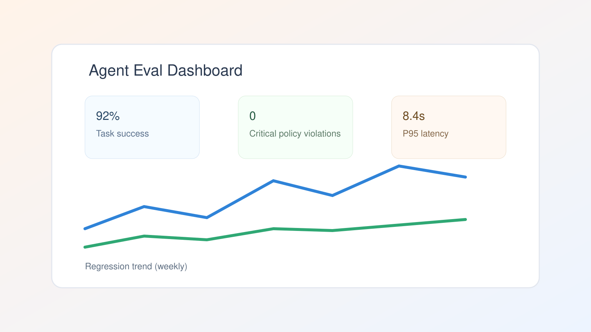

Why Agentic Teams Need Eval Pipelines Before More Prompts

Most teams respond to bad agent behavior by tweaking prompts. That works for a day and fails again next week.
The durable fix is an evaluation pipeline: repeatable tests, measurable pass/fail criteria, and regression tracking for every model or prompt change.
What to evaluate
- Task success: Did the agent solve the request end-to-end?
- Tool correctness: Were the right tools called with valid parameters?
- Policy compliance: Did it avoid restricted actions?
- Latency and cost: Did quality improvements explode runtime or token usage?
Dataset design matters more than prompt elegance
Start with 50 real production tasks. Label expected outcomes, then split by difficulty and failure mode. Synthetic-only evals tend to overestimate quality.
Keep a dedicated "nightmare set" of hard edge cases: ambiguous requests, partial context, broken tool outputs, and contradictory user instructions.
CI for agentic features
Treat your eval run like tests:
- Run on every PR touching prompts, retrieval, tools, or policies.
- Block merge on hard regressions.
- Publish trend charts so product and engineering share one quality view.
Minimum bar for production
Set explicit release gates, for example:
task_success >= 90%critical_policy_violations == 0p95_latency < 12s
When evals are in place, prompt iteration becomes real engineering instead of guesswork.